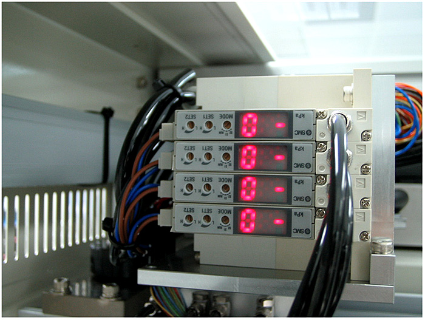

Service History
Subject: Vacuum weak for Input Hands and device drop
Handler Model: NS-7080W (Xilinx, NS7K-05 S/N: 121092)
Controller: RC520
Date: 16 Jan 2008
Symptom
Vacuum weak for Input Hands and device drop from loader to Input Shuttle.
Action
Rectification carried out found that vacuum unit for hands B and D were meddled with as the vacuum unit showed device pick up when there was no device on both hands, thus S1 and S2 on the vacuum unit were both adjusted to -50 kpa and indication was corrected.
Further rectification carried out found that the metal cones on the hands were fitted at the wrong height which might cause device to drop while transporting devices, thus metal cones were re-adjusted to the correct height.

Cause
Vacuum unit showed device pick up when there was no device on both Input Hands due to incorrect vacuum sensitivity setting (S1 & S2 ) on vacuum unit .
Input Hand B & D device drop error due to metal cone tightened at incorrect height on Hand.
Remarks